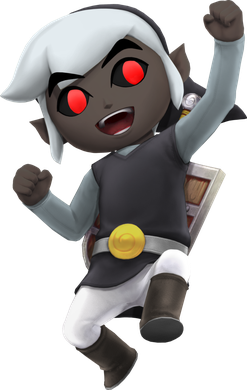

Porteur de l'épée de légende et petit-ami de Zelda à en devenir

Ma formation
Le premier membre de la famille de Link à apparaître dans la série est un oncle non nommé qui rencontre un destin tragique au début de A Link to the Past. Prenant son épée et son bouclier, Link part le venger et finit sa mission : sauver la princesse Zelda et Hyrule de Agahnim puis de Ganon. À la fin du jeu, il est mentionné dans une cinématique qu'il est « enfin guéri », ce qui suggère qu'il n'était que blessé au début du jeu. Dans Ocarina of Time, Link a une mère qui est juste mentionnée dans le jeu comme fuyant les ravages d’une guerre féroce et confiant son bébé au vénérable arbre Mojo alors qu’elle était mortellement blessée. Dans The Wind Waker la grand-mère de Link se démène pour élever ses petits-enfants en l’absence inexpliquée de son mari et de leurs parents. Lors de l’anniversaire de Link au début du jeu, elle lui offre une nouvelle tenue similaire à celle du héros légendaire. C’est également dans cet épisode de la série que l’on trouve le membre de la famille de Link le plus abouti, sa sœur Arielle. Link part à l’aventure pour la sauver après qu’elle a été enlevée par un oiseau géant, et après sa libération elle continue à aider Link dans sa quête. Dans The Minish Cap, Link vit avec son grand-père, le forgeron d’Hyrule et un ami du roi. Quand Zelda est transformée en pierre par le sorcier Vaati, il recommande qu’on envoie Link chercher les légendaires Minish et demander leur aide. Son père et sa mère apparaissent sous la forme d’esprits dans le manga19 de A Link to the Past. Dans Twilight Princess, lorsque Link parvient à trouver tous les loups dorés, le chevalier squelette le surnomme « Mon fils »; dans la version anglophone du jeu, c'est l'expression « My child » qui est employée. Cette expression serait donc utilisée plus à titre métaphorique pour désigner Link comme son fils spirituel ou son héritier - vu qu'il lui a transmis tout son savoir - plutôt que dans un sens littéral, cependant on apprend dans Hyrule Historia qu'il s'agit en fait de son ancêtre, le Héros du Temps. Et dans The Legend of Zelda: Spirit Tracks, aucun élément de sa famille n'est donné, comme pour Skyward Sword.
Dans Breath of the Wild, dans un des souvenirs de Link, Zelda révèle que le père de Link était un chevalier.
Mon expérience
- 1990 - 1997 : Apprentissage de l'art du combat singulier à l'épée et au boulier
- 1997 - 1999 : Apprentissage du maniement du grappin
- 1999 - Aujourd'hui : Apprentissage de l'art de la sagesse et de la bonté auprès de la Princesse Zelda
Mes compétences
- Combat à l'épée et au bouclier
- Usage du grappin sur objets inanimés et ennemis
- Thérianthropie lupine